SentinelSCADA › Tutorial › Chapter 10
Until now we have relied on the Modbus Simulator for tags to develop our ideas with. In this chapter we add a real Modbus/TCP device on the local network. For our example the target is an FX3U-ENET Ethernet interface attached to a Mitsubishi FX3G PLC, but any Modbus/TCP device works the same way.
Open your BoilerHouse project, then choose System > Device/Tag Setup…
Press the + Add Device button. If you have followed the tutorial so far you will already see a Modbus Simulator and a WorldSystem device in the list. We can have one of each of those, one AstroPLC (the logic engine), and then as many Modbus devices as we need, up to 240 devices in total under the licence limit. When OPC UA arrives, it will share that same limit.
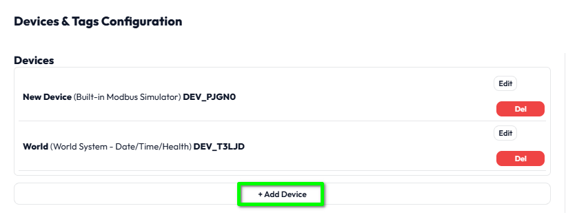
The Driver Type list defaults to Modbus TCP. The Simulator and World System entries are greyed out because they are already in the project.
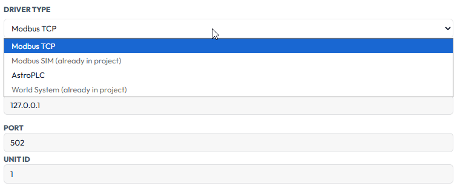
In our example the device is at IP address 192.168.8.70 and serves Modbus on port 1502. Enter the details for your own device, and give it a name that will mean something to you later. We called ours FX3G.
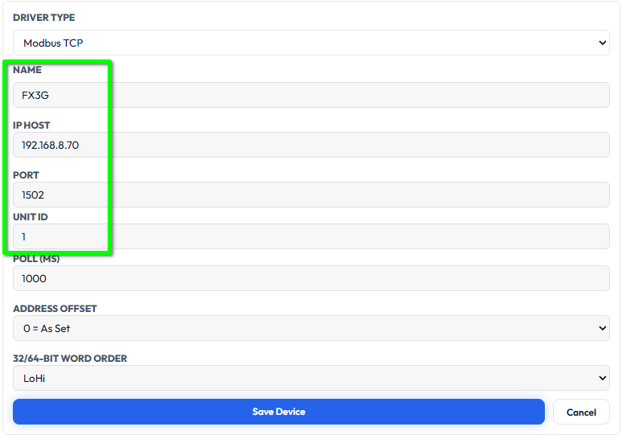
1, which suits most devices that have an address to themselves. Any valid Unit ID can be used, even for a one-to-one connection, so set whatever your device is configured to answer to. If several devices sit behind one address, each needs its own valid Unit ID, for example 1, 2, 3, 10 and 20.Press Save Device when you are done. The new device joins the list, though you may need to scroll the list to see it. Use Edit to change a device later. Del removes it, and any tags attached to it, after a warning prompt.
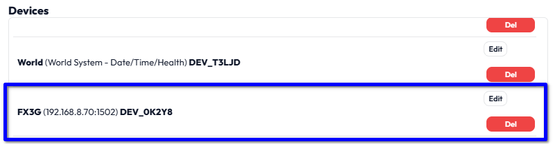
For our example we need just two tags: a binary (on/off) value and a 16-bit word value. In the lower part of the dialog, press + Add Tag.
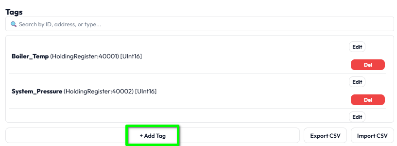
There are a lot of settings here. This is where tags earn their keep: everything from scaling to data logging to alarm levels is set in this form. Do not worry about most of them for now.
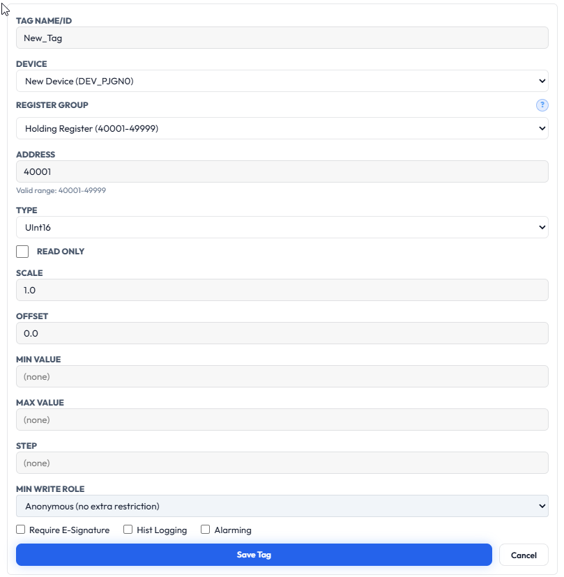
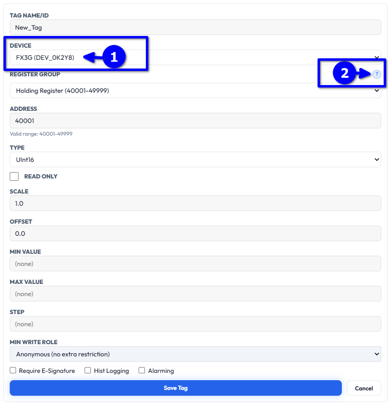
We selected a Modbus TCP device, so this is the help we get. It is worth reading until you have the swing of it: the register groups and their address ranges, how multi-register values are stored, and what Address Offset and Word Order do.
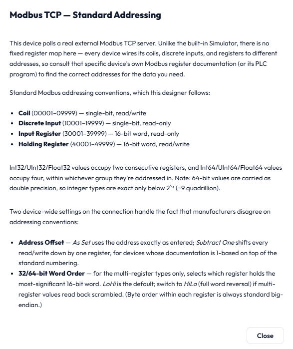
Let us set up the binary tag first. We will call it PlantExtend and say it is a button the occupants can press to start, or extend, the heating for a preset time. That makes it a Coil. Enter the Tag Name/ID, choose the Coil register group and, for our PLC, address 10. Complete the other settings as required.
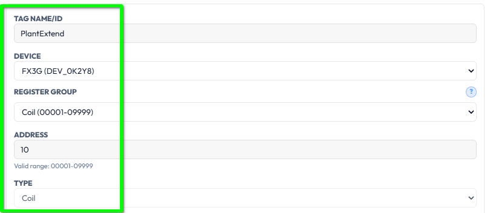
Press Save Tag (1), then Close & Reload SCADA Engine (2).
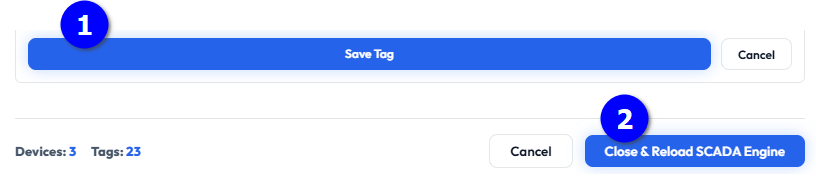
We can set up and test the new tag straight away. On the screen, drag a Button/Switch from the Controls group of the Toolbox. With it selected, look at its properties.
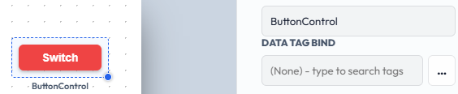
Set the bound tag to PlantExtend. There are two ways to find it. You can start typing in the Data Tag Bind box and the list narrows as you type, matching on name, address and device. You can type several words, so plant coil would find it too. Or press the … button beside the box for a fuller search dialog with device and type filters, and columns you can click to sort. That one comes into its own when a project has thousands of tags.
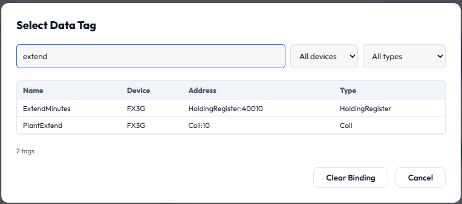
Choose the tag. The widget's label under the switch now shows the tag it is bound to.
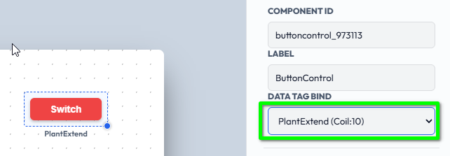
(missing tag).Expand Geometry & Limits and make sure Mode is Toggle, which is the default.
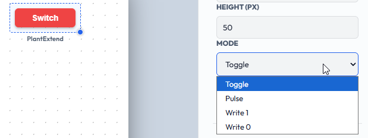
Let us assume that when we set this coil, the PLC runs the plant extension and then resets the coil itself at the end. Let us also assume that if the coil is reset from the screen, the extension stops. How the PLC is programmed is of course entirely up to you.
Finally, in Styling & Appearance, change the Button Text to something meaningful. This is the text the operator sees on the switch.
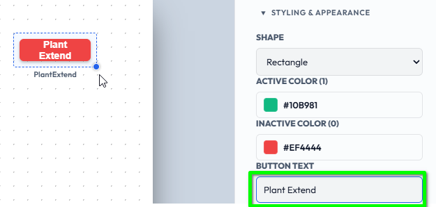
Save the screen with File > Save Screen, then choose View > Run Mode.
In Run Mode every widget's properties are still visible to us; in Kiosk Mode they are not, which is why Kiosk is the mode for operators. Click the switch once and it toggles the coil in the PLC, and the button colour follows the new state.
Clicking the switch also opens the Manual Control section in the properties panel, so we could equally operate the switch from there.
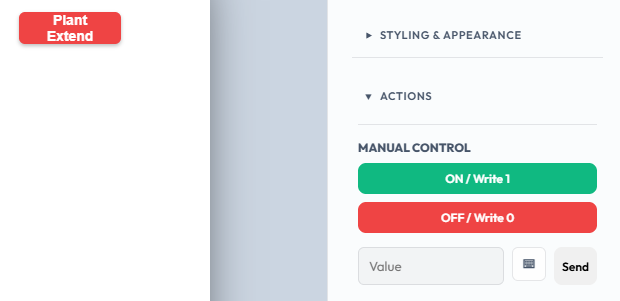
Now for the second tag. Open System > Device/Tag Setup… again, press + Add Tag, and remember to choose the FX3G device first. We will call it ExtendMinutes, with a Holding Register at address 40010 and a type of Int16.
There are many adjustments and features on a tag, but for how long to extend the heating, perhaps 15 to 90 minutes would be sensible limits. Set Min Value to 15, Max Value to 90 and Step to 1. As before, press Save Tag, then Close & Reload SCADA Engine.
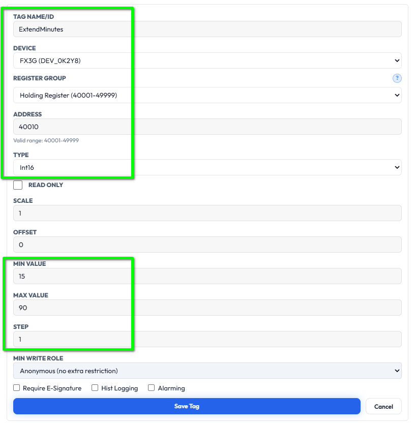
Back on our screen, this time we will use an Analog Knob. Bind ExtendMinutes to it, using the same search box or browse button as before.
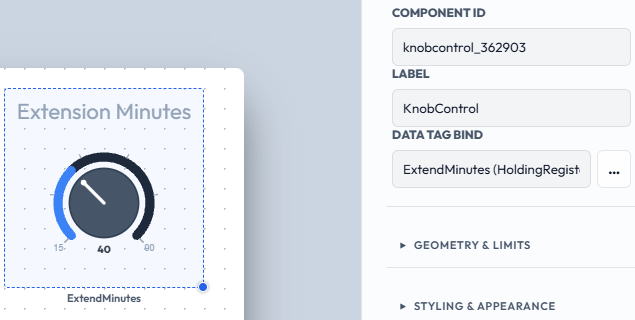
Save the screen with File > Save Screen, choose View > Run Mode, and try to adjust the value. Because the tag itself has limits, the system will not let us go outside them.
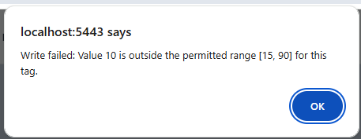
We can avoid that message by giving the knob the same limits, and showing them on the knob also makes it easier to read. In Geometry & Limits, set Min Scale Value to 15 and Max Scale Value to 90, with a Step Size of 1 and no Decimal Places. Tick Show Min/Max & Ticks.
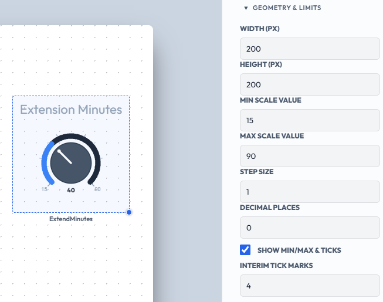
Finally, in Styling & Appearance, give the knob a Title Label of Extension Minutes.
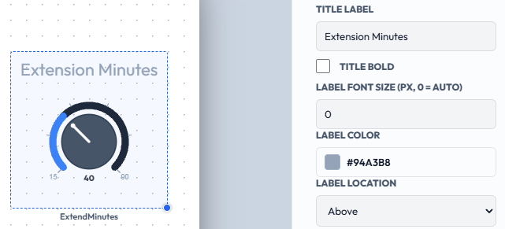
Here is the finished result. There are many more settings to play with to get the look and feel you want, and we will leave those for you to explore.
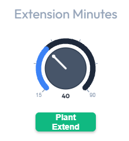
This is the last chapter in the Getting Started series. Together, the ten chapters cover the essential steps to get up and running with SentinelSCADA, and we hope you now have a feel for how things work and how straightforward the methods are. That simplicity carries on through the rest of the screens, widgets and controls. There are more advanced setups to tackle should you need them, such as Keycloak and the Telegram Alarm Manager.
The built-in Web Help and Sentinel Launcher Help describe every feature and function in detail, and also include various examples. Training and direct support are also available if you need them; see the XML Control website for more.
Thank you for your interest in SentinelSCADA!